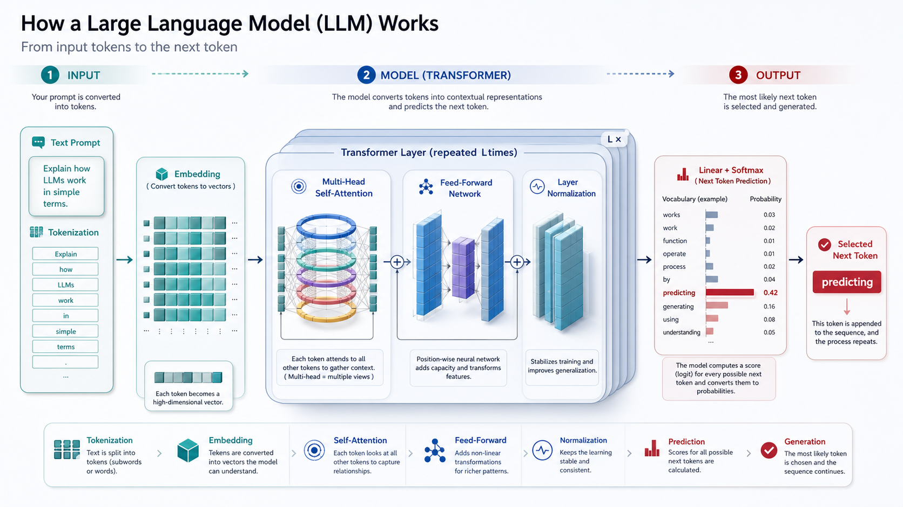
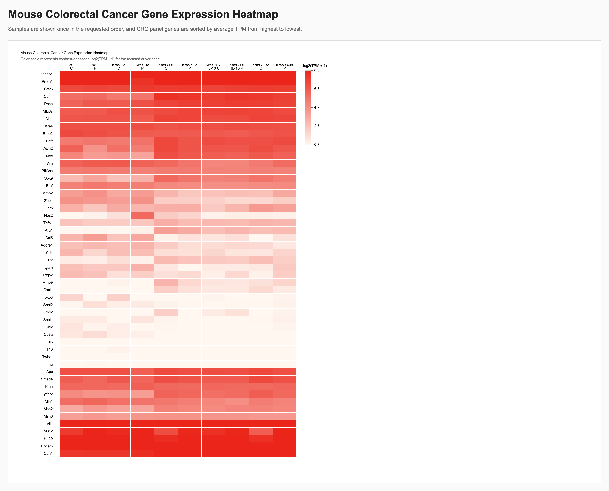
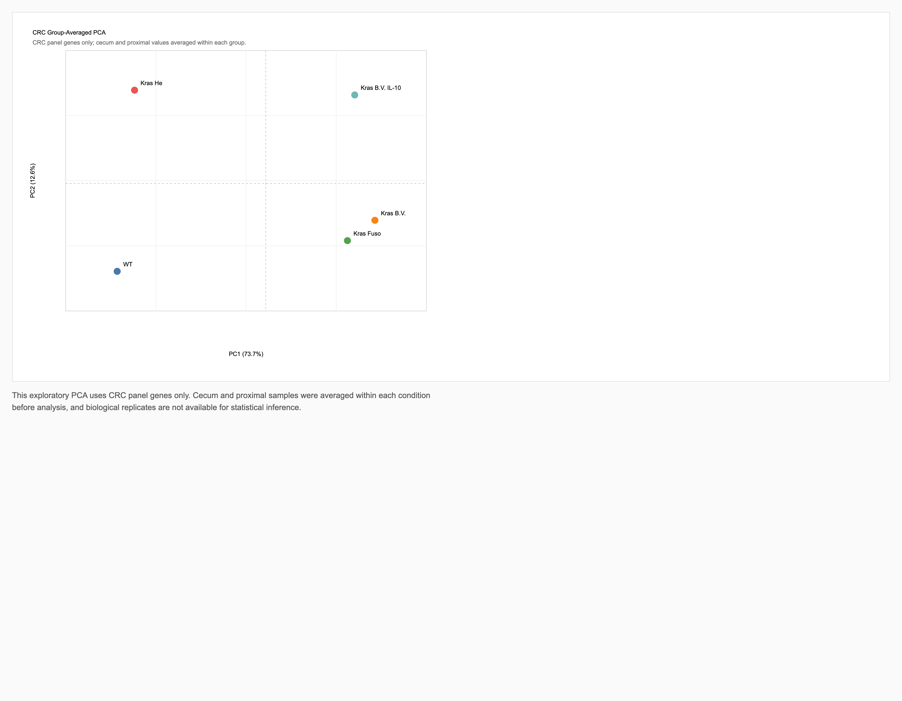
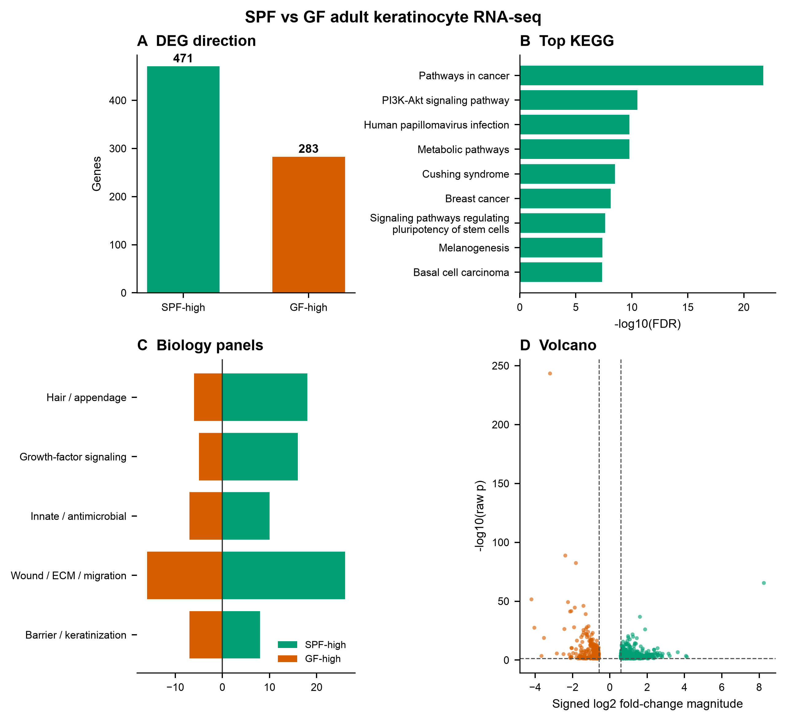
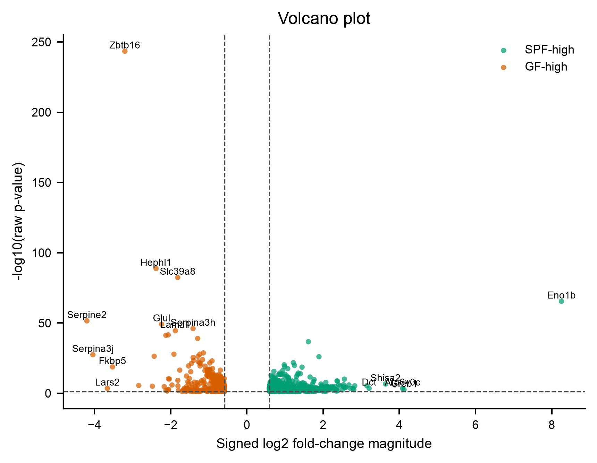
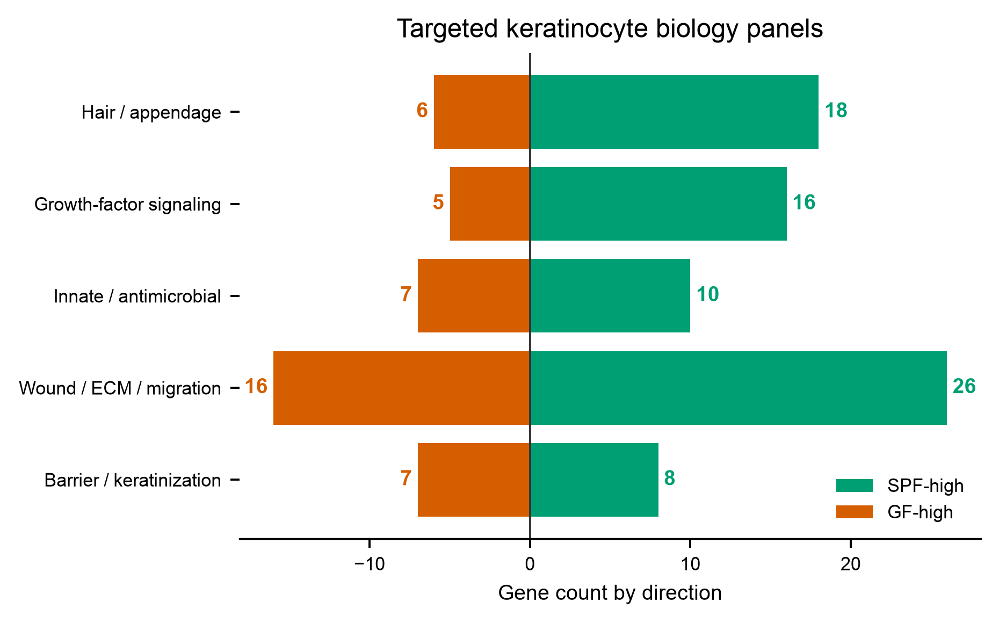
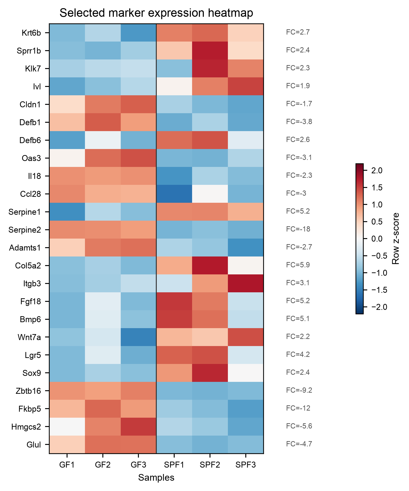
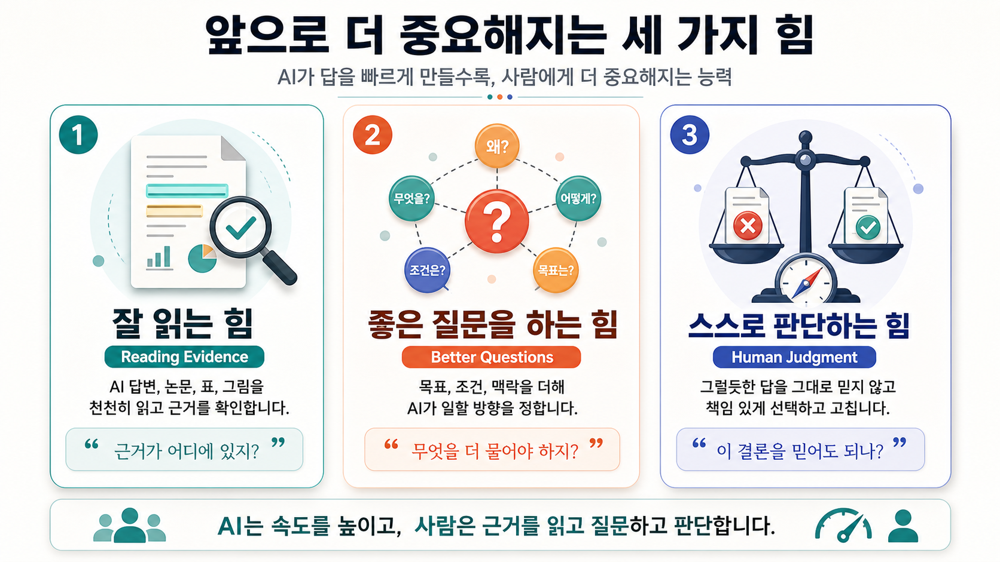

Lecture Notes
AI를 답안지가 아니라, 맥락을 주고 검토하며 함께 일하는
연구 보조 Agent로 다루기 위한 2시간 워크숍 노트
이 강의는 단순히 AI에게 질문하고 답을 보는 시간이 아니라, Codex 같은 Agent에게 실제 파일과 작업 목표를 주고 산출물을 만들어보는 hands-on 형식입니다. 실습 시간이 짧기 때문에 아래 항목을 강의 전에 준비해두면 좋습니다.
강의 전 Codex 앱을 설치하고 OpenAI 계정으로 로그인합니다. 새 thread를 만들 수 있는지, 로컬 폴더를 열 수 있는지, 파일 접근 권한 안내가 뜨면 허용할 수 있는지 확인합니다.
OpenAI 계정이 필요합니다. Plus 이상을 권장합니다. 무료 버전은 모델 사용량, 파일 처리, token 한도 때문에 실습 중 제한이 걸릴 수 있습니다.
Hands-on 섹션에서 제공되는 ZIP 파일을 미리 다운로드합니다. 원시 FASTQ는 제외되어 있고, 분석 완료 산출물 중심으로 구성되어 있습니다.
다운로드한 ZIP을 압축 해제한 뒤, Codex에서 해당 폴더를 열 수 있게 둡니다. 폴더명에는 되도록 공백과 특수문자를 줄이면 terminal 작업이 편합니다.
생성형 AI를 처음 쓸 때는 보통 "질문을 잘하면 좋은 답이 온다"는 방식으로 생각합니다. 하지만 연구 workflow에서 AI를 제대로 쓰려면 관점이 조금 달라져야 합니다. 좋은 질문도 중요하지만, 더 중요한 것은 충분한 context, 검토 가능한 artifact, 사람의 판단이 들어가는 반복 구조입니다.
여기서는 AI를 "답을 주는 챗봇"이 아니라 "파일을 읽고, 도구를 쓰고, 산출물을 만들고, 검토를 거쳐 수정하는 Agent"로 다룹니다. 연구자는 Agent에게 모든 판단을 넘기는 것이 아니라, 실험 맥락과 해석 기준을 제공하고 결과물을 검토합니다.
강의 전체에서 반복해서 등장하는 용어입니다. 처음에는 낯설 수 있지만, 이 용어들을 알면 AI 도구들이 서로 어떻게 연결되는지 이해하기 쉬워집니다.
포함 용어: LLM, Frontier Model, Multimodal, Token, Prompt, Context, Context Window, Agent, Tool Use, Artifact, Workflow, HITL, Skill, Hooks, Harness, AGENTS.md, Terminal / CLI, Markdown, HTML, Domain Knowledge.
| 용어 | 뜻 | 연구 workflow에서의 의미 |
|---|---|---|
| LLM | Large Language Model. 대규모 텍스트와 코드로 학습한 언어 모델입니다. | 입력된 context 다음에 올 가능성이 높은 token을 예측하며 답변을 만듭니다. 결론이 아니라 검토할 초안을 만든다고 봐야 합니다. |
| Frontier Model | 현재 가장 성능이 높은 최상위 AI 모델군입니다. ChatGPT, Claude, Gemini 같은 최신 모델을 묶어 부를 때 씁니다. | 긴 문서 읽기, 추론, 코딩, 데이터 분석, tool use에서 강점이 있지만, 연구 해석의 최종 책임은 사람에게 남습니다. |
| Multimodal | 텍스트만이 아니라 이미지, 표, PDF, 음성, 화면, 코드 같은 여러 입력 형식을 함께 다루는 능력입니다. | 논문 본문과 figure를 함께 읽거나, 그래프 이미지를 보고 figure note 초안을 만들 수 있습니다. 단, figure 해석은 검토가 필요합니다. |
| Token | 모델이 읽고 쓰는 단위입니다. 단어, 단어 일부, 기호 등이 token이 됩니다. | 긴 논문, 큰 표, 여러 파일을 넣을 때 token 한도가 중요해집니다. |
| Prompt | AI에게 주는 요청문입니다. | 좋은 prompt는 명령만이 아니라 목표, 입력, 출력, 기준, 검토 방식을 함께 담습니다. |
| Context | AI가 답변을 만들 때 참고하는 모든 정보입니다. | 데이터 설명, sample 의미, 실험군, 금지사항, 출력 형식, 검토 기준을 포함합니다. |
| Context Window | 모델이 한 번에 참고할 수 있는 입력과 이전 대화의 최대 범위입니다. 쉽게 말해 AI의 작업 책상 크기입니다. | 긴 PDF, supplementary table, 이전 분석 기준을 함께 넣을 수 있는지와 연결됩니다. 크더라도 근거와 수치는 다시 확인해야 합니다. |
| Agent | 목표를 받고 계획을 세운 뒤 도구를 사용해 작업하는 AI입니다. | 파일 읽기, 웹 검색, Python 실행, 그래프 생성, 문서 작성, 코드 수정 같은 일을 수행할 수 있습니다. |
| Tool Use | AI가 계산기, 파일 시스템, terminal, browser, Python 같은 도구를 호출하는 방식입니다. | 연구 분석에서는 실제 데이터를 읽고 코드를 실행해 artifact를 만들 수 있게 합니다. |
| Artifact | AI가 만든 검토 가능한 산출물입니다. | Markdown report, figure PNG/PDF, table, PPT draft, checklist, HTML dashboard 등이 해당합니다. |
| Workflow | 목표를 산출물까지 가져가는 반복 가능한 절차입니다. | 파일 구조 확인, QC/DEG/pathway 검토, figure 후보 선정, 해석 한계 표시, report/PPT draft 생성이 하나의 workflow가 됩니다. |
| HITL | Human-in-the-loop. 사람이 중간과 마지막 검토에 들어가는 구조입니다. | AI 결과를 그대로 믿지 않고, 연구자가 실험 맥락과 근거를 확인하는 필수 과정입니다. |
| Skill | Agent에게 주는 재사용 가능한 작업 매뉴얼입니다. | RNA-seq, literature review, figure review처럼 반복되는 작업 절차와 검증 기준을 묶어둡니다. |
| Hooks | 특정 시점에 자동으로 실행되는 규칙이나 검사입니다. | 파일 저장 후 테스트 실행, report 생성 후 링크 확인, figure export 후 이미지 크기 확인처럼 반복 검증을 자동화할 때 유용합니다. |
| Harness | 모델이 파일, 도구, 규칙, 권한 안에서 일하도록 묶어주는 실행 환경입니다. | Codex, Claude Code 같은 도구가 대표적인 harness 역할을 합니다. |
| AGENTS.md | 프로젝트 안에 두는 Agent용 사용설명서입니다. README가 사람을 위한 설명서라면, AGENTS.md는 Agent를 위한 운영 지침입니다. | 원본 데이터 수정 금지, 결과물 저장 위치, 무거운 분석 실행 전 확인 같은 프로젝트 규칙을 반복 입력하지 않아도 됩니다. |
| Terminal / CLI | 마우스 대신 명령어로 컴퓨터에게 일을 시키는 화면입니다. | Codex는 terminal을 통해 파일을 찾고, Python을 실행하고, PDF/HTML/figure 생성 결과를 검증합니다. |
| Markdown | 제목, 목록, 표, 코드블록을 간단한 텍스트 문법으로 표현하는 형식입니다. | analysis report, README, figure review, checklist를 사람이 읽기 쉬운 파일로 남길 때 적합합니다. |
| HTML | 웹페이지의 구조를 만드는 언어입니다. | 발표자료, interactive report, figure dashboard처럼 클릭, 팝업, 스크롤 animation이 있는 산출물을 만들 수 있습니다. |
| Domain Knowledge | 특정 업무나 문제 영역의 용어, 맥락, 데이터, 관행, 제약조건, 좋은 결과의 기준을 이해하는 지식입니다. | sample grouping, marker 해석, pathway 해석, 과장된 claim 여부를 판단하는 기준입니다. 좋은 context는 domain knowledge에서 나옵니다. |

ChatGPT 이후의 변화는 단순히 모델이 똑똑해졌다는 이야기가 아닙니다. 핵심은 AI가 사람의 질문에 답하는 도구에서, 컴퓨터 안의 여러 도구를 사용해 일을 수행하는 Agent로 이동하고 있다는 점입니다.
| 시기 | 변화 | 의미 |
|---|---|---|
| 2022 | ChatGPT 대중화 | 자연어로 질문하고 답변을 받는 챗봇 사용이 폭발적으로 확산되었습니다. |
| 2023 | GPT-4, Plugins, Code Interpreter | 텍스트 답변을 넘어 코드 실행, 파일 처리, 데이터 분석 보조가 가능해졌습니다. |
| 2024 | Multimodal과 긴 context | 문서, 이미지, 표, 코드, 음성 등 다양한 입력을 함께 다루기 시작했습니다. |
| 2025 | Deep Research, Coding Agent, Computer Use | AI가 계획을 세우고 웹과 파일을 오가며 긴 작업을 수행하는 방식이 확산되었습니다. |
| 2026 | Agentic workflow의 일상화 | 하네스, skill, 검증 루프를 통해 AI를 실제 업무 절차 안에 넣는 사용법이 중요해지고 있습니다. |
연구자에게 중요한 질문은 "어떤 모델이 제일 좋은가?"만이 아닙니다. 더 중요한 질문은 "내 연구 workflow에서 어떤 맥락을 주고, 어떤 산출물을 만들게 하며, 어디서 사람이 검토할 것인가?"입니다.
현재의 Agent는 단순한 질의응답보다 훨씬 넓은 일을 할 수 있습니다. 하지만 작업을 할 수 있다는 것과 그 결과가 항상 맞다는 것은 완전히 다른 문제입니다.
논문 발표 준비에서 AI를 가장 단순하게 쓰는 방법은 "이 논문 요약해줘"입니다. 하지만 journal club이나 lab meeting 발표에서는 요약만으로 충분하지 않습니다. 발표자는 figure 흐름을 이해하고, 저자 해석과 발표자가 말해도 되는 해석을 구분해야 하며, 청중이 물을 만한 질문을 예상해야 합니다.
이 PDF 논문을 연구실 journal club 발표로 준비하려고 해. 바로 요약하지 말고, 먼저 발표 준비 계획을 세워줘. 목표는 15분 발표이고, figure 중심으로 설명하고 싶어. 사람이 검토해야 할 지점도 계획에 포함해줘.
이 논문을 연구실 journal club 발표 준비용으로 읽어줘. 먼저 1) 핵심 질문, 2) 주요 결론, 3) 실험 흐름, 4) 발표자가 조심해야 할 해석을 나눠서 정리해줘. 과장된 결론은 피하고, 논문 안에서 직접 보이는 근거와 추정이 필요한 내용을 구분해줘.
Figure별로 무엇을 보여주는지 정리해줘. 각 figure에 대해: - 실험 질문 - 사용한 방법 - 관찰 결과 - 저자 해석 - 발표자가 검토해야 할 한계 를 표로 만들어줘.
지금까지 정리한 내용을 바탕으로 연구실 journal club용 PPTX를 만들어줘. 조건: - 15분 발표 분량 - 10~12장 내외 - 각 슬라이드에 제목, 핵심 메시지, 들어갈 figure/panel, 발표자 노트를 포함 - 저자 결론과 발표자가 검토해야 할 한계를 구분 - 마지막에는 journal club 토론 질문 3~5개 포함 - 파일명은 journal_club_draft.pptx로 저장
ChatGPT, Claude, Gemini는 각각 장점이 있습니다. 어떤 모델은 데이터 분석과 도구 사용이 편하고, 어떤 모델은 긴 문서 읽기와 글쓰기 피드백에 강합니다. 하지만 연구 workflow의 품질은 모델 이름보다 다음 요소에 더 크게 좌우됩니다.
| 요소 | 설명 | 예시 |
|---|---|---|
| Domain Knowledge | 특정 문제 영역의 용어, 맥락, 데이터, 관행, 제약조건, 좋은 결과의 기준을 이해하는 지식입니다. | SPF vs GF 비교에서 어떤 sample을 묶어야 하는지, 어떤 marker 해석이 과한지 판단합니다. |
| Context | AI가 답변을 만들 때 참고해야 할 배경 정보입니다. | 데이터 설명, 컬럼 의미, 실험군, 출력 형식, 금지사항, 검토 기준을 함께 제공합니다. |
| Harness | 모델이 도구와 파일, 실행 환경 안에서 일하도록 묶어주는 구조입니다. | Codex가 terminal, 파일, browser, skill을 사용해 artifact를 만듭니다. |
| Review Loop | 중간 산출물을 사람이 확인하고 수정 방향을 주는 반복 구조입니다. | plot의 축, threshold, sample grouping, biological claim을 연구자가 검토합니다. |
같은 AI를 써도 작업을 맡기는 범위와 검증 능력에 따라 생산성은 크게 달라집니다. 예를 들어 시니어가 AI로 20배 생산성을 낼 수 있다면, 신입은 5배 정도에서 멈출 수 있습니다. 차이는 모델 사용법만이 아니라 작업 영역의 범위, 스스로 판단하고 결정할 수 있는 능력, 도메인 지식의 깊이에서 나옵니다.
실제 분석 작업에서 Agent는 파일을 읽고, figure를 만들고, report를 구성하고, PPT 변환과 전달 준비까지 이어갈 수 있습니다. 하지만 분석 단위, 비교 기준, 시각화 방식, 생물학적 해석은 연구자의 검토가 들어가야 안정적입니다.
| 상황 | 사람의 피드백 | Agent가 한 일 |
|---|---|---|
| 분석 단위 수정 | C와 P를 구분하지 말고 한 그룹으로 묶도록 지시 | group 평균 기준으로 PCA와 volcano 해석을 다시 구성 |
| PCA 기준 선택 | 조건별 replicate가 아니라 조건 단위 비교가 필요하다고 판단 | group-averaged PCA로 시각화 기준 변경 |
| Heatmap 대비 조정 | 패턴이 잘 보이도록 contrast와 scaling을 조정 | 색상 범위와 gene panel 구성을 조정한 heatmap 생성 |
| Volcano/PCA 선별 | 발표에 사용할 figure 후보를 선별 | 최종 패키지 구성과 PPT 변환 준비 |


이 사례의 핵심은 Agent가 무능하다는 것이 아닙니다. 오히려 Agent는 빠르게 여러 산출물을 만들 수 있습니다. 다만 어떤 산출물이 연구 질문에 맞는지, 어떤 비교가 생물학적으로 의미 있는지, 어떤 표현이 과한지는 연구자의 도메인 검토가 필요합니다.
LLM은 결론을 주는 기계가 아니라 검토할 결과물을 만드는 기계에 가깝습니다. 모델은 주어진 context를 바탕으로 그럴듯한 다음 token을 이어 붙이며 답변을 만듭니다. 이 방식은 매우 유용하지만, 사실성이나 실험적 타당성을 자동으로 보장하지 않습니다.
LLM은 다음 token 후보에 score를 매기고 선택합니다. 따라서 자연스럽지만 틀린 답변도 만들 수 있습니다.
AI 답변은 최종 결론이 아니라 초안입니다. 보고서, figure note, checklist처럼 검토 가능한 형태로 남겨야 합니다.
Human-in-the-loop은 선택사항이 아니라 연구 workflow의 기본 안전장치입니다.
좋은 질문보다 충분한 context가 결과를 바꿉니다. "이 데이터 분석해줘"라는 요청은 AI에게 너무 많은 결정을 맡깁니다. 좋은 context는 Agent가 임의로 판단할 부분을 줄이고, 사람이 원하는 기준으로 artifact를 만들게 합니다.
이 데이터 분석해줘.
이 폴더는 keratinocyte SPF vs GF bulk RNA-seq 분석 결과야. 원시 FASTQ는 이번 실습에서 제외하고, 이미 만들어진 DEG, enrichment, figure 파일을 기준으로 봐줘. 목표: - analysis_report.md 작성 - figure_review.md 작성 - 발표에 쓸 수 있는 핵심 figure 후보 3개 정리 검토 기준: - sample grouping과 DEG threshold를 먼저 확인 - axis, p-value, filtering 조건을 figure note에 명시 - 생물학적 해석은 association과 hypothesis 수준으로 보수적으로 작성 - 도메인 검토가 필요한 문장은 별도 checklist로 분리
Hallucination은 AI가 그럴듯하지만 틀린 내용을 만드는 현상입니다. 연구에서는 citation, 통계, figure, biological interpretation에서 특히 위험합니다.
| 위험 | 예시 | 검증 방법 |
|---|---|---|
| 가짜 citation | 존재하지 않는 논문, 잘못된 DOI, 실제와 다른 저자/연도 | 논문 제목, DOI, PubMed/arXiv/저널 페이지를 직접 확인 |
| 통계 오해 | raw p-value와 FDR 혼동, threshold 누락, sample 수 오해 | metadata, test method, threshold, multiple testing correction 확인 |
| Figure 오해 | axis 반대로 읽기, log scale 누락, color meaning 오해 | axis, legend, color scale, filtering 조건을 figure note에 기록 |
| 해석 과장 | association을 causation처럼 표현 | "관찰", "시사", "가설"과 "입증"을 구분 |
Agent를 안정적으로 쓰려면 한 번에 모든 것을 맡기기보다, 목표, 계획, 도구, 산출물, 사람 검토를 반복하는 구조가 필요합니다.
| 단계 | 질문 | 산출물 |
|---|---|---|
| Goal | 무엇을 끝내고 싶은가? | 작업 목표와 완료 기준 |
| Plan | 어떤 순서로 할 것인가? | 작업 계획, stop point, 검토 지점 |
| Tools | 어떤 파일과 도구를 쓸 것인가? | 파일 목록, 실행 명령, API, Python script |
| Artifact | 무엇을 남길 것인가? | report, figure, table, PPT, checklist |
| Review | 사람이 무엇을 확인할 것인가? | 수정 요청, caveat, 최종 승인 |
Ensembl REST API에서 human KRT14 gene annotation을 받아와서, exon/intron 구조를 3D gene viewer HTML로 만들어줘. 대표 transcript, exon 위치, transcription 방향, gene 좌표를 라벨로 표시하고 브라우저에서 검증해줘. 먼저 계획부터 보여줘.
이 데모의 장점은 실제 공개 데이터, 웹 API, HTML artifact, 브라우저 검증이 한 번에 들어간다는 점입니다. 연구자가 확인해야 할 것은 실제 좌표, exon 개수, strand 방향, 라벨 위치, 과장된 생물학적 표현 여부입니다.
Agent를 잘 쓰려면 매번 prompt에 모든 지시를 길게 쓰는 대신, 반복되는 규칙을 파일이나 skill로 분리하는 것이 좋습니다.
AGENTS.md는 프로젝트별 기본 지침입니다. README가 사람을 위한 설명서라면, AGENTS.md는 Agent가 작업을 시작할 때 참고하는 운영 지침에 가깝습니다.
# AGENTS.md 예시 - 데이터 원본은 수정하지 않는다. - 무거운 FASTQ 재분석은 사용자 확인 후 실행한다. - 결과물은 reports/ 아래 Markdown으로 저장한다. - 그림을 만들면 축, 기준, filtering 조건을 함께 기록한다. - 결론은 "관찰된 연관"과 "추가 검증 필요"를 구분한다.
Skill은 특정 작업 유형에 대한 재사용 가능한 작업 매뉴얼입니다. 예를 들어 bulk RNA-seq 분석에서는 QC, DEG 기준, enrichment, figure 해석, 검증 checklist를 함께 확인하도록 만들 수 있습니다.
--- name: bulk-rnaseq description: End-to-end bulk RNA-seq orchestrator --- # Bulk RNA-seq The pipeline is: FastQC/trim -> align/quant -> counts -> differential expression -> enrichment -> figures
| 구분 | AGENTS.md | Skill |
|---|---|---|
| 범위 | 프로젝트 전체 규칙 | 특정 작업 유형의 절차 |
| 예시 | 원본 데이터 수정 금지, 결과물 위치, 실행 명령 | RNA-seq 분석, literature review, scientific visualization |
| 효과 | 프로젝트 맥락 반복 입력 감소 | 작업 품질과 검증 기준 안정화 |
이번 실습은 raw FASTQ부터 전체 pipeline을 새로 돌리는 시간이 아닙니다. 이미 준비된 keratinocyte SPF vs GF bulk RNA-seq 분석 결과를 바탕으로, Agent가 파일 구조를 파악하고, Skill 기준에 맞춰 analysis report, figure note, review checklist를 만드는 과정입니다.

아래 GitHub 저장소의 scientific-agent-skills를 Codex에서 사용할 수 있게 설치해줘. https://github.com/K-Dense-AI/scientific-agent-skills 설치 후에는 사용 가능한 skill 목록을 확인하고, 이번 keratinocyte RNA-seq 실습에 어떤 skill을 쓰는 것이 좋은지 제안해줘.
scientific-agent-skills를 사용해서 이 keratinocyte SPF vs GF RNA-seq 폴더를 분석해줘. 주의: - raw FASTQ 재분석은 하지 말고, 이미 있는 분석 결과와 figure를 기준으로 봐줘. - 먼저 파일 구조와 사용 가능한 산출물을 요약해줘. - bulk-rnaseq skill 기준으로 QC, DEG, enrichment, figure review 항목을 정리해줘. - scientific-visualization skill 기준으로 figure note를 만들어줘. 만들 산출물: - analysis_report.md - figure_review.md - review_checklist.md - 발표용 요약 1페이지
| Artifact | 내용 | 검토 기준 |
|---|---|---|
| analysis_report.md | 데이터 구조, 비교군, DEG 기준, 주요 결과, 보수적 해석 | sample grouping, threshold, FDR, raw p-value 구분 |
| figure_review.md | figure별 message, axis, color, filtering, caveat | 그림이 예쁘기보다 기준이 명확한지 확인 |
| review_checklist.md | 연구자가 최종 확인할 질문 목록 | 도메인 해석, 통계 기준, 추가 검증 필요 항목 |
| presentation_summary.md | 발표에 넣을 핵심 문장과 figure 후보 | 과장된 인과 표현이 없는지 확인 |



| 기능 | 언제 쓰나 | 예시 |
|---|---|---|
| /goal | 긴 작업의 목표를 고정하고 싶을 때 | 실습 전체 목표를 "RNA-seq report와 figure review 생성"으로 설정 |
| Plan mode | 실행 전에 작업 순서를 확인하고 싶을 때 | 논문 발표 준비, 데이터 분석, PPT 생성 전 계획 검토 |
| Files & paths | 실제 폴더와 파일을 읽어야 할 때 | 분석 결과 폴더, PDF, CSV, PNG 경로 제공 |
| Skills | 반복 작업의 기준을 안정화하고 싶을 때 | bulk-rnaseq, scientific-visualization, literature-review |
| Verify | 작업 후 산출물을 확인해야 할 때 | 파일 존재 확인, PDF 생성 확인, JS 문법 검사, figure 열어보기 |
| Browser | 웹페이지, HTML report, GitHub Pages를 눈으로 확인할 때 | 레이아웃 깨짐, 버튼 동작, 다운로드 링크 확인 |
도구는 빠르게 바뀝니다. 따라서 모든 서비스를 따라가기보다 큰 흐름을 이해하는 것이 좋습니다. 여기서는 frontier model 중심으로 보고, 나머지 도구는 용도별로 이름을 알아두는 정도면 충분합니다.
| 구분 | 도구 | 연구 workflow에서의 역할 |
|---|---|---|
| OpenAI | ChatGPT, Deep Research, Codex | 연구 질문 구체화, 문헌 조사, 보고서 작성, 데이터 분석, 코딩 보조, agentic workflow |
| NotebookLM, Gemini Deep Research, Gemini for Science | 자료 기반 연구 정리, Google 생태계 연동, 과학 연구 특화 AI의 방향성 | |
| Anthropic | Claude, Claude Code | 긴 논문/원고 읽기, 논리 검토, 비판적 피드백, 학술 글쓰기 보조, coding workflow |
| 도구 | 한 줄 설명 |
|---|---|
| Elicit | 연구 질문 기반 literature search와 후보 논문 정리에 강한 도구 |
| ResearchRabbit | 관련 논문과 citation network를 시각적으로 탐색하는 도구 |
| Litmaps | literature map 작성과 새 논문 monitoring에 유용한 도구 |
| Consensus | 논문 기반으로 특정 claim의 근거를 빠르게 확인하는 도구 |
| SciSpace | 논문 PDF의 어려운 문단, 표, 수식을 설명받기 좋은 도구 |
| Perplexity | 출처 기반 web research와 빠른 조사에 강한 AI 검색 도구 |
| AlphaFold Server | 생명과학 분야의 protein structure와 interaction 예측 특화 도구 |
AI는 생산성을 높일 수 있지만 학습을 대신하지 않습니다. AI가 만든 결과를 더 빠르게 많이 받는 것이 목표가 아니라, 그 결과를 읽고 질문하고 판단할 수 있는 힘을 유지하는 것이 중요합니다.

AI 답변, figure, table, paper, report를 천천히 읽고 근거를 확인하는 능력입니다.
왜 그런지, 다른 가능성은 없는지, 어떤 기준으로 판단해야 하는지 묻는 능력입니다.
AI가 말해도 무조건 믿지 않고, 근거와 맥락을 바탕으로 책임 있게 결정하는 능력입니다.
이 논문을 journal club 발표 준비용으로 읽어줘. 먼저 핵심 질문, 주요 결론, figure 흐름, 조심해야 할 해석을 분리해줘. 저자 결론과 내가 발표에서 말해도 되는 결론을 구분해줘.
이 폴더의 파일 구조를 먼저 파악해줘. 어떤 파일이 원본이고, 어떤 파일이 분석 결과이며, 어떤 figure와 report가 있는지 표로 정리해줘. 원본 파일은 수정하지 마.
이 figure들을 발표에 사용할 수 있는지 검토해줘. 각 figure마다: - 핵심 message - axis와 color 의미 - filtering과 threshold - 과장될 수 있는 해석 - 추가로 확인해야 할 점 을 정리해줘.
아래 결과 해석 문장을 보수적으로 고쳐줘. association, hypothesis, additional validation needed를 구분하고, causal claim처럼 들리는 표현은 낮춰줘.